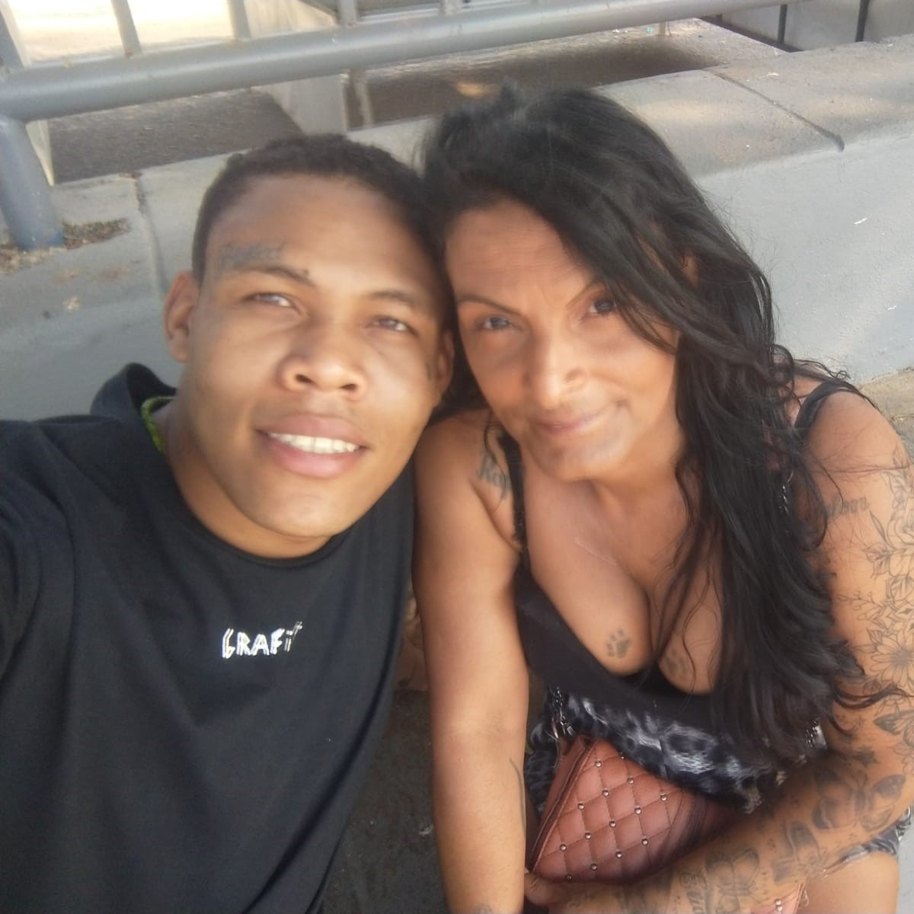

Transformando Vidas com Dignidade e Cidadania
Ajude-nos a oferecer um novo começo para quem mais precisa
A Casa Cidadã é uma organização dedicada a resgatar a dignidade de pessoas em situação de rua, oferecendo assistência personalizada e apoio para que cada indivíduo retome sua autonomia. Nosso trabalho visa sensibilizar a sociedade para a importância de respeitar e pensar no próximo, mostrando que, com o suporte adequado, é possível reconstruir vidas.
Doe Agora Quem SomosAlém disso, colaboramos com outras organizações que realizam trabalhos semelhantes, criando uma rede de apoio que fortalece a nossa missão de dar um lar a quem mais precisa.
Notícias
Casa Cidadã Celebra Parceria com Projeto Aluguel Solidário para Expandir Atuação em Belo Horizonte
A Casa Cidadã está sediando uma parceria estratégica com o Projeto Aluguel Solidário, uma iniciativa inovadora que visa oferecer uma rede de moradias efetivas...
Memórias da Casa

Andreia, assistida pela Casa Cidadã

Turma do curso de ADS da Puc Minas, desenvolvedores da plataforma da Casa Cidadã
Aparecida, beneficiária da Casa Cidadã
Aparecida e Itamar, assistidos pela Casa Cidadã

Christina e seu companheiro Matheus

Celis José Soares

Amanilson, beneficiário da Casa Cidadã